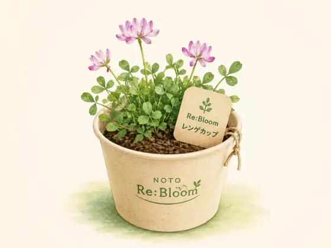

受付
参加確認、緊急連絡先などの確認を行います。13:00に開会します。
泥だらけで、能登を咲かせる。2026.9.20 / SUZU
使われなくなった土地を、みんなが集まり、笑い合える場所へ。珠洲市若山町洲巻の約1,000㎡の田んぼで、子どもから大人まで泥の中で思いっきり体を動かします。競技参加者50名を目標に開催します。

参加者募集中です。 正式版チラシでの地域周知を開始しています。ご質問はページ内の「お問い合わせ」からお気軽にご連絡ください。
会場と準備PLACE & PREPARATION
会場になる田んぼを事前に確認し、危険物や足元、水の状態などを確認したうえで当日を迎えます。



当日の流れDAY FLOW
競技や休憩をはさみながら、田んぼの状態と参加者の体調を見て進行します。
参加確認、緊急連絡先などの確認を行います。13:00に開会します。
準備と安全説明の後、13:30頃から綱引き、リレー、台風の目、バケツリレー、玉入れなどを行います。休憩をはさみ、15:45頃から交流時間を予定しています。
16:30頃に閉会し、着替えや片付けを含め17:00頃の解散を予定しています。
競技内容PROGRAM
運動のあとはしっかり水分補給。参加者のみなさんにアクエリアスをご用意します。
安心して参加するためにSAFETY
会場確認、子どもの参加ルール、暑さ・天候への対応、救護体制を準備して実施します。
保護者の方と一緒にご参加ください。
申込みと当日受付は保護者の方にお願いします。小学生は受付後、子どものみで競技に参加できます。
石・ガラス・金属などの危険物、深い泥や段差、水の状態などを事前に確認します。
休憩と水分補給を行い、暑さや雷・大雨などの状況に応じて競技の変更・中止を判断します。
体調不良やけががあった場合は競技を止めて対応し、必要に応じて119番通報や保護者への連絡を行います。イベント保険も準備を進めています。
当日にみんなで作りますMAKE A RENGE CUP
競技のあと、会場の泥と培養土、レンゲの種を使って「Re:Bloomレンゲカップ」を作ります。難しい作業はなく、子どもから大人まで一緒に参加できます。
会場の泥と培養土を小さなカップに入れ、レンゲが育つ土台を作ります。
土の上にレンゲの種をまき、軽く土をかぶせます。
最初の水やりをして、自宅で育て始められる状態にします。
育て方が分かるカードと一緒に持ち帰り、イベントのあともレンゲの成長を楽しめます。

9.19 SAT / RE-BOOST STUDIO
RE-BOOST STUDIOは、「復興支援」で終わらず、その先の地域の発展につなげる挑戦を共有する場です。スポーツを軸に、学生・地域・企業が出会い、次の行動につなげます。
質問・お問い合わせCONTACT
参加方法、子どもの参加条件、持ち物、会場への行き方など、泥ん子運動会について気になることがあればメールでお問い合わせください。参加フォームの入力が難しい場合のご相談も受け付けています。
主催：NOTO Re:Bloom ／ 後援：北國新聞社
メールを確認後、NOTO Re:Bloomから返信します。「泥ん子運動会2026について」と書いていただくとスムーズです。
参加前によく確認したいことFAQ
服装やアクセスなど、参加前に気になる情報をここにまとめています。未確定の内容は「現在調整中」と明記しています。
無料です。 参加フォームからお申し込みください。
全年齢対象です。 幼稚園以下のお子さんは、保護者の方と一緒にご参加ください。
小学生は、保護者による申込みと当日受付の後、子どものみで競技に参加できます。幼稚園以下は保護者同伴でご参加ください。
泥で汚れてもよいTシャツなどでご参加ください。着替え、タオル、汚れ物を入れる袋をご持参いただくと安心です。
競技は裸足で行います。靴や長靴は基本的に必要ありません。
必須ではありません。 可能であれば服の下に水着を着て、その上にTシャツなどを着て来ると着替えやすくおすすめです。
更衣スペースを設けます。 競技後に着替えられるよう準備します。
シャワー設備ではありませんが、水で体についた泥を落とす程度の洗い流しは可能です。
現在調整中です。 田んぼ近くに停められる可能性があり、旧上黒丸小学校周辺も候補です。具体的な駐車位置と台数は確定後に案内します。
9月20日は日曜日で、上黒丸方面の若山飯田ルートは土日運休のため利用できません。現時点では車での来場をおすすめしており、車以外の来場方法は現在調整中です。
雨天決行、荒天中止です。 雷・大雨など、安全確保が難しいと判断した場合は競技の変更または中止とします。開催可否に変更がある場合はこのサイトでお知らせします。
現在調整中です。 確保方法と利用場所が決まり次第、このサイトでお知らせします。
現在調整中です。 受付方法や安全確認の手順とあわせて、確定後に案内します。
体調不良やけががあった場合は競技を止めて対応し、必要に応じて119番通報や保護者への連絡を行います。イベント保険も準備を進めています。
綱引き、リレー、台風の目、バケツリレー、玉入れの5種目を行います。田んぼや天候の状態によって、安全のため進行方法を変更する場合があります。
競技参加者は50名を目標にしています。運営スタッフ約10名、保護者や見学の方も含め、全体で約70名が関わる想定です。
12:30受付、13:00開始、16:30頃閉会予定です。着替えや片付けを含め、17:00頃の解散を予定しています。
あります。 参加者向けにアクエリアスをご用意します。暑さ対策のため、ご自身でも飲み物をご準備ください。
infonotorebloom@gmail.com までお気軽にお問い合わせください。参加フォームの入力が難しい場合もご相談いただけます。
公共交通情報は2026年8月26日時点です。珠洲市が掲載している「若山飯田ルート」時刻表で土・日運休を確認しています。珠洲市の市営路線バス案内を見る ↗
参加するJOIN
参加費は無料です。子どもから大人まで、泥の中で思いっきり体を動かして楽しみましょう。参加フォームからお申し込みください。分からないことがあれば、お問い合わせからご連絡ください。